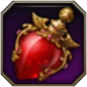
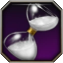
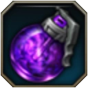

| Objetos de combate | |
|---|---|
Tipo de consumible |
Cantidad |
Poción de Sanación  |
x7 |
Poción para detener el tiempo  |
x3 |
Granada de torbellino |
x3 |
Granada oscura*  |
x3 |
*Recomendable para los supports.